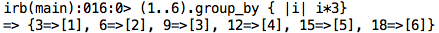

Enums
fun with enumerator methods: cycle - group_by - map
Let's take a peek at three enumerator methods. But first, a quick refresh of enumerators in general:
"An enumerator is a class which allows both internal and external iteration."
In other words, a class is considered "to be an enumerator" if it has a specific set of methods that allow for iteration. We're familiar with casses like Array and String being enuerable, but this is because they come bundled with built-in enumerable methods. Which methods, you ask? Mainly the ones that allow iteration. The most popular one (as well as mandatory) is .each.
So enumerators are classes that can be iterated. Whether or not they can be iterated is up do the methods they contain. Popular classes come with them built in, but you can also make custom classes that are enumerable by adding include Enumerable during their initial definition. Now lets learn about some of the popular enumerable methods:
- .cycle
cycle is cycles through your elements. Simple! For example, call cycle on an array, pass it a block do to something to each element of that array. It will do this. Forever. (remember to pass it an argument if you want it to just cycle n-times)

- .group_by
group_by groups your elements by whatever you pass in the block. It returns a hash. Stay with me here. The values of the keys are from evaluated result passed to the block. The hashe's values are the arrays (eg indexes) of the elements that resulted in that outcome.
For example, in the example below we call group_by on the range of numbers from one to six. Look to the block and we'll notice that for every index (every number in the range), we simply multiply it by three. We've done this plenty of times with .each. But the difference is the way the output is saved. In the case of group_by, the output is saved in a hash. The key is the value the block evaluated to, for example i*3. The value is each index that resulted in that output, for example the first index has the value of one (a coincidence due to the range we passed). When we multiply the value of the first index by three, the output is three. So the key is three (the evaulation), and the value is 1 (the index that gave us the result):

- .map
map is a little easier than group_by. The quickest way to understand map is to liken it to each. Recall that each does something to each element of the object it's called on, and it returns a new object. In other words, each isn't destructive. Map does just this but is destructive.

There's plenty of other enumerator methods to do all the tricks you need. Be sure to check out the Ruby Docs for more!